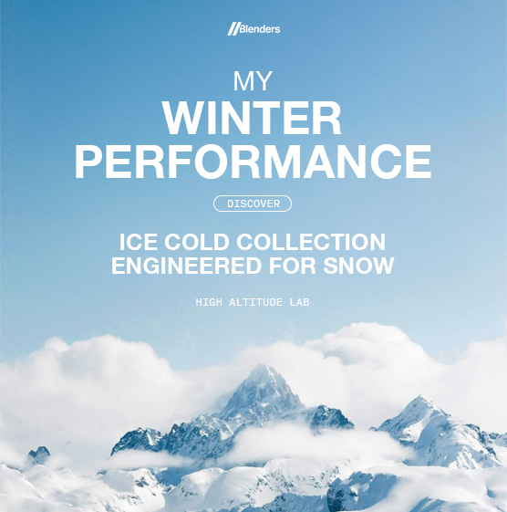
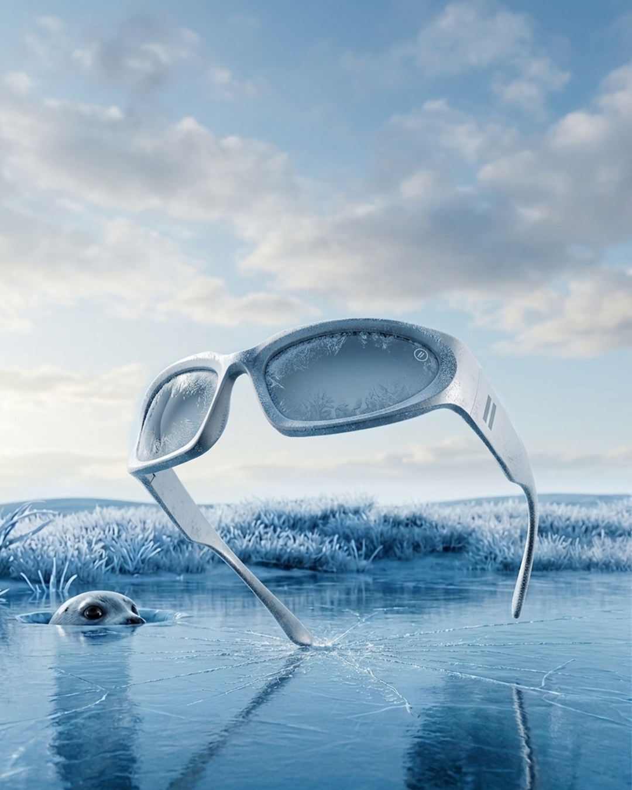
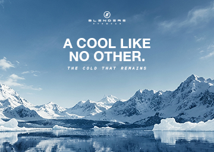
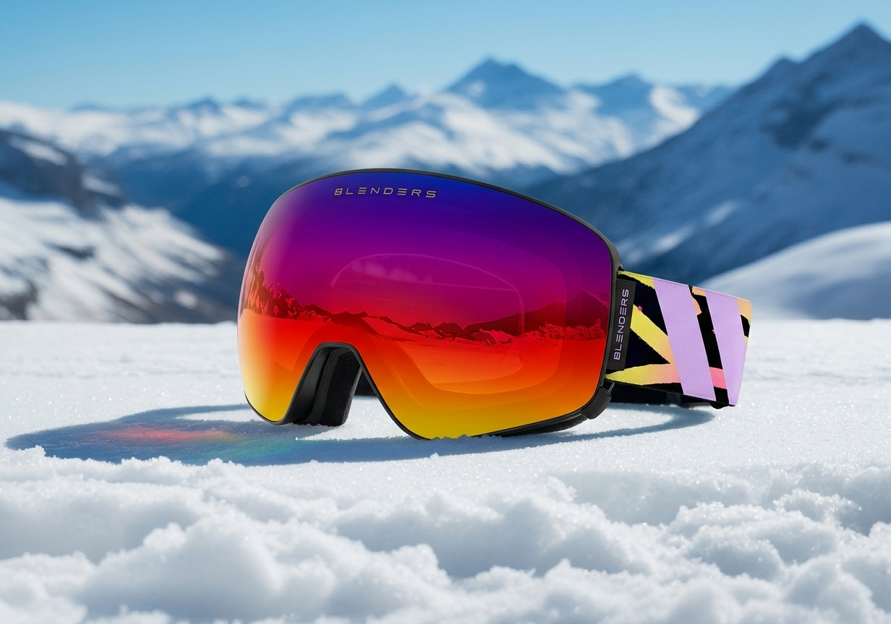
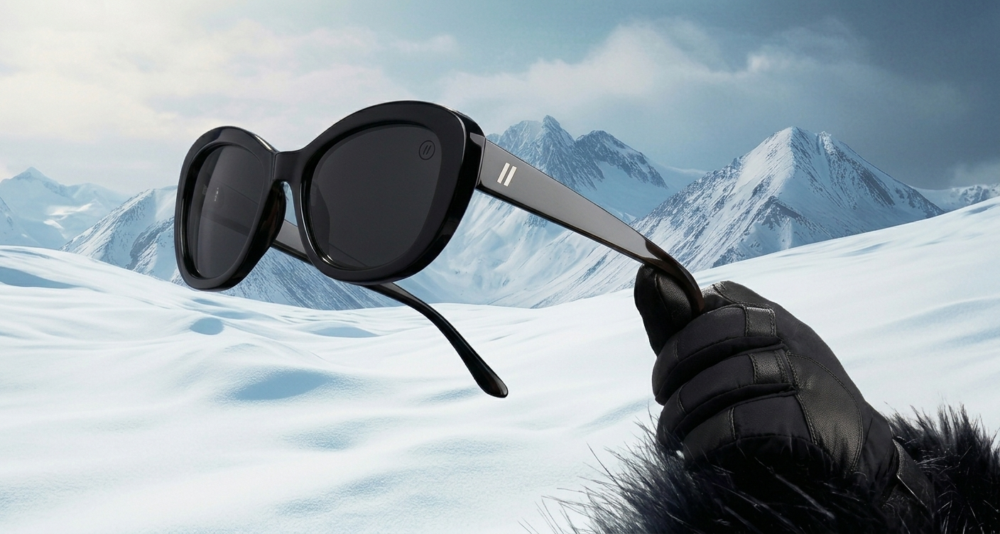
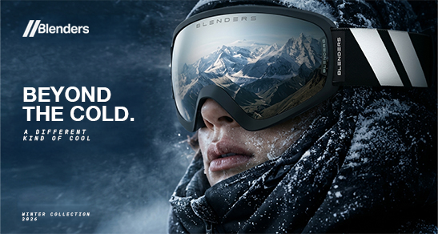

Process highlights
Work overview
Timeline
Mar - Settembre 2026
Disciplines
Product Design
Advertising
Campaign Research
Responsibilities
UX Audit & Competitive Analysis
User Flows & Information Architecture
Wireframing & High-Fidelity Design
Design System & Components (Figma)
Prototyping & Interaction Design
Tools
Gemini
Chat Gpt
Seedance 2.0
Contesto / Brief
Project Introduction
Il progetto consiste nello sviluppo di una campagna pubblicitaria per Blenders Eyewear, con l'obiettivo di valorizzare il brand attraverso una comunicazione visiva d'impatto, legata alla stagione invernale. La campagna mira a rafforzare il carattere distintivo degli occhiali, combinando estetica, personalità e lifestyle attraverso un linguaggio contemporaneo, capace di catturare l'attenzione di un pubblico giovane e attento alle tendenze.


Idea
Creative Concept
ICE COLD nasce dall'incontro tra l'identità di Blenders Eyewear e l'immaginario visivo dell'inverno. Il concept interpreta il freddo come elemento estetico e caratterizzante, trasformando ghiaccio, neve e atmosfere glaciali in strumenti di comunicazione. Il contrasto tra ambientazioni fredde, colori intensi e protagonismo del prodotto definisce una direzione artistica audace e riconoscibile, in cui gli occhiali diventano il fulcro di un'estetica invernale contemporanea.
Blenders trasforma gli occhiali in un’espressione di stile, unendo design e spirito contemporaneo.
Blenders ridefinisce l'eyewear sportivo, combinando funzionalità, colore e personalità.
Blenders valorizza ogni look con occhiali dal carattere forte, pensati per chi ama distinguersi.
Montature audaci e colori distintivi definiscono uno stile unico.
Comfort e personalità in ogni montatura, e ogni dettaglio esprime una forte identità.
ICE COLD.
Made to Stand Out.
La campagna reinterpreta l'inverno attraverso un'estetica eyewear audace e contemporanea. Atmosfere glaciali, contrasti visivi e giochi di luce valorizzano il prodotto.
Tipografia - Palette
Visual System
Subheader / Caption font
IBM Plex Mono
Regular
1234567890
AaBbCcDdEeFfGgHhIiJjKkLlMmNn
OoPpQqRrSsTtUuVvWwXxYyZz
Headline font
Helvetica Neue
Family
1234567890
AaBbCcDdEeFfGgHhIiJjKkLlMmNn
OoPpQqRrSsTtUuVvWwXxYyZz
Sviluppo
Campaign Development
La campagna si sviluppa attraverso un sistema coordinato di visual pubblicitari, costruiti attorno al concept ICE COLD. La direzione artistica combina fotografia di prodotto, ambientazioni invernali e interventi grafici, creando composizioni capaci di valorizzare forme, dettagli e caratteristiche degli occhiali. Il linguaggio visivo viene declinato su diversi formati e supporti, mantenendo coerenza cromatica, riconoscibilità e continuità comunicativa tra i diversi touchpoint.




Digital advertising
Social Media Advertising
La strategia social traduce l'identità della campagna in una serie di contenuti digitali progettati per Instagram e altri canali social. Post, stories, visual promozionali e contenuti video interpretano il concept attraverso composizioni dinamiche e immagini ad alto impatto visivo. L'obiettivo è valorizzare il prodotto, rafforzare la riconoscibilità della campagna e creare un'esperienza comunicativa coerente, capace di coinvolgere il pubblico attraverso un linguaggio immediato e contemporaneo.
Billboard
Outdoor Advertising
BEYOND
THE COLD.
A DIFFERENT KIND OF COOL
Software
Tool Utilizzati
Il processo creativo integra strumenti di intelligenza artificiale generativa a supporto delle diverse fasi progettuali. ChatGPT è stato utilizzato per lo sviluppo del concept, la definizione dei testi e l'elaborazione delle direzioni creative. Gemini ha supportato la ricerca e l'esplorazione delle idee visive. L'integrazione di questi strumenti ha permesso di sperimentare nuove possibilità espressive, accelerando il processo di produzione e ampliando le potenzialità della direzione artistica.